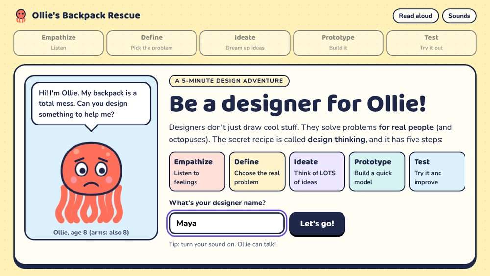
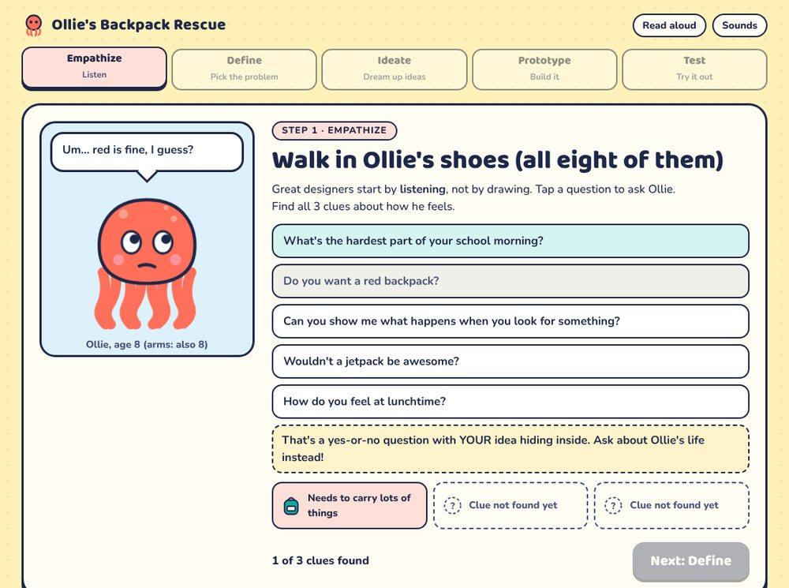
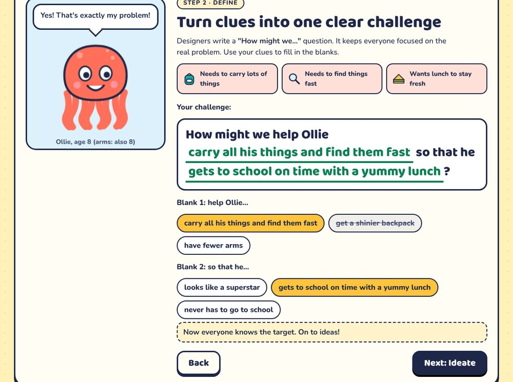
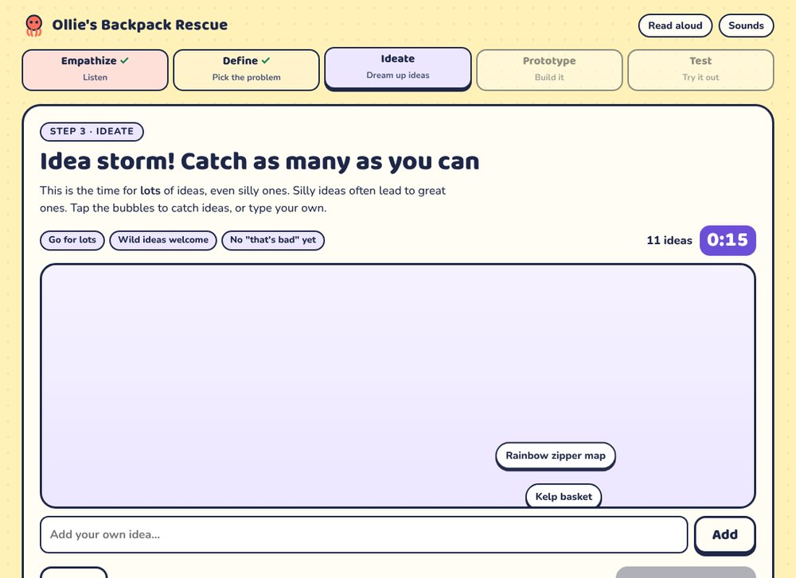
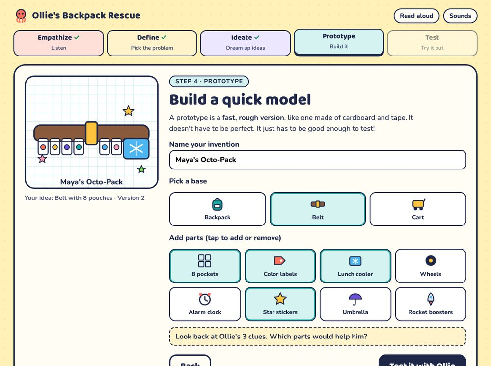
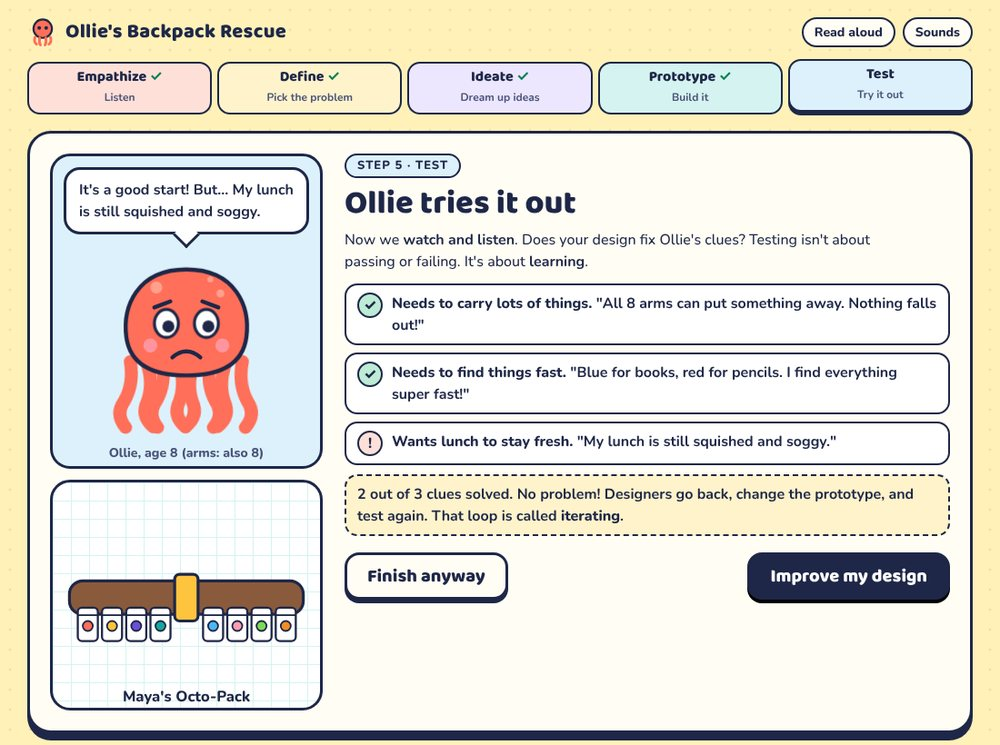
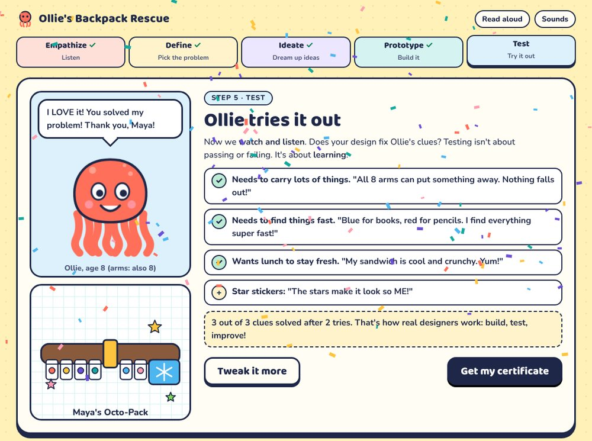
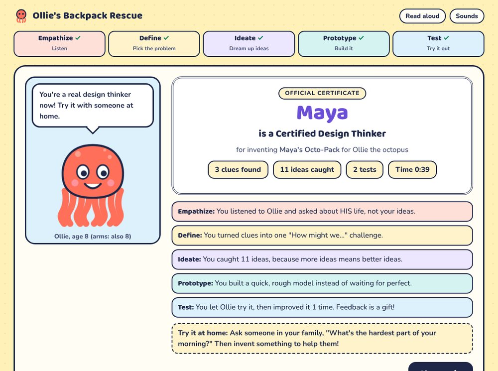

Project Overview
Ollie's Backpack Rescue teaches children the design thinking process (Empathize, Define, Ideate, Prototype, Test) by having them do it. Ollie has eight arms, a backpack with two straps and a very messy school morning. The learner interviews him, names his real problem, brainstorms, builds an invention and watches Ollie try it. If the invention misses one of his needs, they improve it and test again.

Design Goal
Help young learners understand that designers solve problems for real people, and let them practice each step of design thinking in one short, low-stakes session.
Design Approach
- Learn by doing: every step is an action (asking, choosing, catching, building, testing), not a definition to read.
- Feedback in the character's voice: Ollie reacts to every choice, so feedback feels like part of the story rather than a grade.
- Mistakes are teaching moments: weak choices are allowed, and each one explains why it misses so the learner can recover.
- One thread from start to finish: the three clues found in Empathize are the criteria checked in Test, so learners see how each step feeds the next.
The Learning Experience
1 · Empathize: Listen First
Learners choose questions to ask Ollie. Open questions about his life reveal a clue. Leading questions ("Do you want a red backpack?") get a vague answer and a tip explaining that the question had the learner's own idea hiding inside.

2 · Define: Name the Real Problem
Learners fill in a "How might we…" sentence using their clues. Each distractor gives a reason it doesn't fit, such as "His arms are part of who he is! We design FOR Ollie, we don't change him."

3 · Ideate: Go for Quantity
A 25-second "idea storm" sends idea bubbles floating up for learners to catch, and they can type their own. Brainstorming rules on screen (go for lots, wild ideas welcome, no "that's bad" yet) teach deferring judgment. Then learners pick one idea to build.

4 · Prototype: Build It Rough
Learners name their invention, pick a base (backpack, belt or cart) and add parts. The drawing updates live. A reminder prompts them to look back at Ollie's clues, and some parts, like rocket boosters, are fun but don't solve anything.

5 · Test: Learn and Iterate
Ollie tries the invention against each of his three clues. Anything missing comes back as honest, specific feedback ("My lunch is still squished and soggy"), and learners are invited to improve the design. The game calls this loop iterating and celebrates it.


Reflection & Transfer
A personalized certificate recaps what the learner did at each step and their stats (clues found, ideas caught, tests run). It ends with a real-world challenge: ask someone at home about the hardest part of their morning, then invent something to help them.

Accessibility & Inclusion
Read aloud
Ollie speaks his lines with text-to-speech, so early and struggling readers can follow along. It can be turned off.
Sound control
Sound effects reinforce right and wrong choices and have their own on/off toggle.
Reduced motion
Animations and confetti switch off for learners whose devices ask for reduced motion.
Keyboard and screen
Every control is a real button with a visible focus outline, and the layout works on phones, tablets and Chromebooks.
Reflection & Next Steps
Key Learnings
- Linking the Empathize clues to the Test criteria made the whole process feel connected instead of five separate activities.
- Explaining why a wrong choice misses teaches more than marking it wrong.
- A playful character lets children practice failure and iteration without feeling judged.
Next Steps
Playtest with children and teachers, add new characters and problems so the game can be replayed, and create a short teacher guide for using it as a warm-up before a classroom design project.